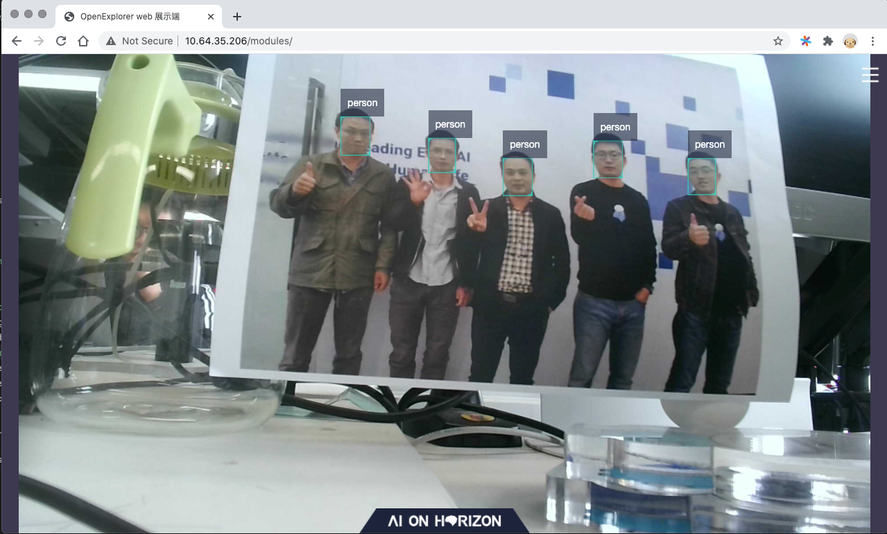

Application Development Samples¶
After powering the dev board, compiling image, upgrading dev board system and installing development environment,
the next step is to run the samples in the ddk/samples directory.
This chapter explains how to run the entire process by taking the multitask perception reference solution in the
ddk/samples/solution_zoo/multitask_perception_solution directory.
1. Confirm Your Development Environment¶
Confirm that cross-compilation environment has been installed:
work@work-server:~$ ll /opt/gcc-linaro-6.5.0-2018.12-x86_64_aarch64-linux-gnu
total 36
drwxr-xr-x 7 root root 4096 Oct. 15 2019 aarch64-linux-gnu
drwxr-xr-x 2 root root 4096 Oct. 15 2019 bin
-rw-r--r-- 1 root root 9489 Oct. 15 2019 gcc-linaro-6.5.0-2018.12-linux-manifest.txt
drwxr-xr-x 3 root root 4096 Oct. 15 2019 include
drwxr-xr-x 3 root root 4096 Oct. 15 2019 lib
drwxr-xr-x 3 root root 4096 Oct. 15 2019 libexec
drwxr-xr-x 8 root root 4096 Oct. 15 2019 share
Confirm that the
ddk/package/hostpackage has been installed:
~/.horizon/ddk/
├── xj3_aarch64
│ ├── appsdk
│ │ └── appuser
│ ├── appsdk_1.9.0.tar.gz
│ ├── bpu_predict
│ │ ├── include
│ │ └── lib
│ ├── bpu_predict_1.10.2.tar.gz
│ ├── dnn
│ │ ├── include
│ │ └── lib
│ ├── dnn_1.1.2a.tar.gz
│ ├── hobotsdk
│ │ ├── include
│ │ └── lib
│ ├── hobotsdk_1.9.13.tar.gz
│ ├── image_utils
│ │ ├── include
│ │ └── lib
│ ├── image_utils_1.1.10c.tar.gz
│ ├── model_inference
│ │ ├── include
│ │ └── lib
│ ├── model_inference_1.0.13.tar.gz
│ ├── rtsp_server
│ │ ├── include
│ │ └── lib
│ ├── rtsp_server_1.0.13.tar.gz
│ ├── uvc_server
│ │ ├── include
│ │ └── lib
│ ├── uvc_server_1.0.13.tar.gz
│ ├── video_source
│ │ ├── include
│ │ └── lib
│ ├── video_source_1.0.13.tar.gz
│ ├── xproto
│ │ ├── include
│ │ └── lib
│ ├── xproto_1.1.10c.tar.gz
│ ├── xstream
│ │ ├── include
│ │ └── lib
│ └── xstream_1.1.10c.tar.gz
└── xj3_x86_64_gcc_4.8.5
├── bpu_predict
│ ├── include
│ └── lib
├── bpu_predict_1.10.2.tar.gz
├── dnn_x86
│ ├── include
│ └── lib
├── dnn_x86_1.1.2a.tar.gz
├── hobotsdk
│ ├── include
│ └── lib
├── hobotsdk_1.9.13.tar.gz
├── xproto
│ ├── include
│ └── lib
├── xproto_1.1.10c.tar.gz
├── xstream
│ ├── include
│ └── lib
└── xstream_1.1.10c.tar.gz
Confirm the connection between dev board and dev machine and upgrade supporting system image. The following sample is based on the 0207 version.
root@x3sdbx3-samsung2G-3200:~# cat /etc/version
LNX_PL2.0_WB_20210207 release
Confirm that dev board tools in the
ddk/package/boarddirectory have been installed.
// install ddk/package/board on dev board
work@work-server:/ddk/package/board$ sh install.sh 10.64.35.206
// validate installation
root@x3sdbx3-samsung2G-3200:/userdata/.horizon/# ll
drwxr-xr-x 6 root root 4096 Jan 1 08:14 ai_express_webservice_display
-rwx------ 1 root root 10424232 Jan 1 08:15 hrt_bin_dump
-rwx------ 1 root root 15380352 Jan 1 08:15 hrt_model_exec
2. Compile Samples¶
There are rich build-in source code of face and body perception related algorithms in the multitask perception reference solution.
Please compile before running samples. Enter the ddk/samples/solution_zoo/multitask_perception_solution directory and
run the build_and_deploy.sh script to compile.
Once successfully compiled, a new /deploy directory will be added into the multitask_perception_solution directory.
work@work-server:/multitask_perception_solution/deploy$ ll
total 44
drwxr-xr-x 6 work work 4096 Apr. 13 11:32 configs
drwxrwxr-x 2 work work 4096 Apr. 13 11:32 lib
drwxr-xr-x 2 work work 4096 Apr. 13 11:32 models
drwxrwxr-x 3 work work 4096 Apr. 13 11:32 multitask_perception
-rwxr-xr-x 1 work work 12366 Apr. 13 11:32 run_body.sh
-rwxr-xr-x 1 work work 11637 Apr. 13 11:32 run_face_recog.sh
Note
The first compilation can be slow as it involves multiple dependencies.
However, succeeding compilations will be faster when running the build_and_deploy.sh script again
as source code are modified.
3. Dev Board Deployment¶
It is simple to deploy the multitask perception reference solution in dev board.
You only need to deploy the multitask_perception_solution/deploy into the /userdata directory in dev board.
You can use scp/tftp/nfs etc. methods to transmit data between dev machine and dev board.
The samples in this chapter uses scp implementation.
// install /deploy onto dev board
work@work-server:/solution_zoo/multitask_perception_solution$ scp -r deploy root@10.64.35.206:/userdata/
// validate whether installation is successfully on dev board
root@x3sdbx3-samsung2G-3200:/userdata/deploy# ll
drwxr-xr-x 6 root root 4096 Jan 1 08:29 configs
drwxrwxr-x 2 root root 4096 Jan 1 08:29 lib
drwxr-xr-x 2 root root 4096 Jan 1 08:29 models
drwxrwxr-x 3 root root 4096 Jan 1 08:29 multitask_perception
-rwx------ 1 root root 12366 Jan 1 08:29 run_body.sh
-rwx------ 1 root root 11637 Jan 1 08:29 run_face_recog.sh
4. Execution and Visualization¶
There are run_body.sh and run_face_recog.sh scripts in the /userdata/deploy directory, they are respectively
used for running the human body and face perception samples.
Your implementation also depends on your camera type. Here we use a ASHU 1080p USB camera.
root@x3sdbx3-samsung2G-3200:/userdata/deploy# sh run_face_recog.sh
chmod: start_nginx.sh: No such file or directory
sh: can't open 'start_nginx.sh': No such file or directory
Choose lunch x3 vio type menu...pick a combo:
1. single cam
2. single feedback
Which would you like?
1
You choose 1:single_cam
Choose lunch single cam sensor menu...pick a combo:
1. single camera: os8a10, 2160P
2. single camera: os8a10, 1080P
3. single camera: usb_cam, 1080P
4. single camera: f37_1080p, 1080P
Which would you like?
3
You choose 3:usb_cam
vio_mode: usb_cam
vio_pipe_file: configs/vio/x3dev/iot_vio_x3_usb_cam_1080p.json
usb_cam start, default resolution 1080P...
/usr/bin/adbd is not runnning
vio_cfg_file: ./configs/vio_config.json.x3dev.cam
turn on mallopt
use bpu native engine
[1970-01-01 08:35:32 INFO 548044893280 hr_api.cpp:479] HorizonRT version = 1.5.1
[1970-01-01 08:35:32 INFO 548044893280 hr_api.cpp:484] hbrt version = 3.12.2
Once operation begins, you can visit the dev machine address http://[dev board] within the same network segment and
visualize output results. Here we take http://10.64.35.206 as an example.
Refer to below result sample:
{kind=link}